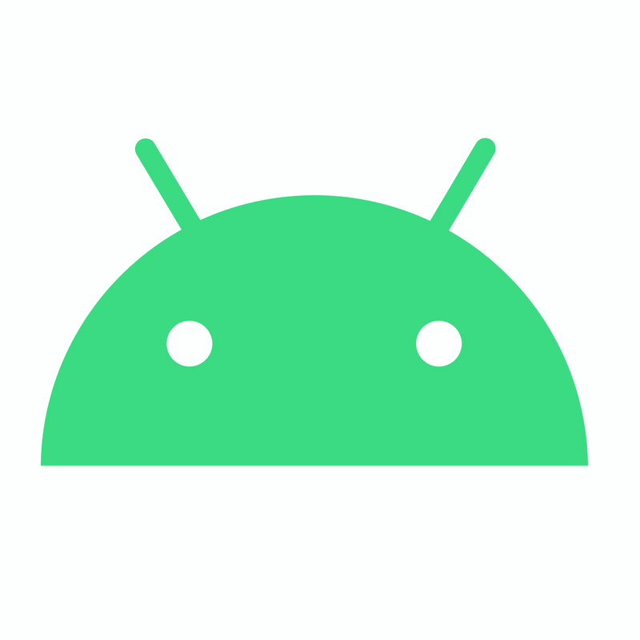

Привіт. Мене звуть Максим. Я навчаюся у ВНТУ. Мені 18 років. Це мій перший великий проект (якщо так можна сказати).
Ви також можете написати мені про щось, Я буду радий поговорити.

Цікавий факт
Тут ви можете побачити 1 з 30 випадкових фактів про ОС Android: